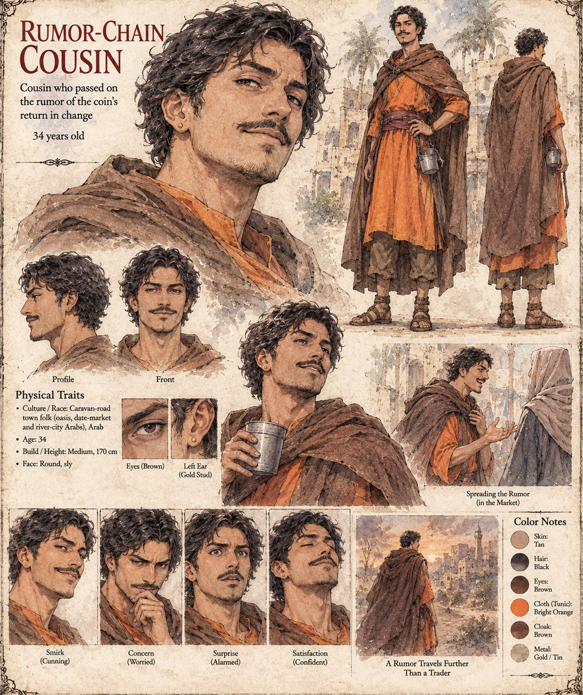

The Rumor-Chain Cousin
Middle link of the rumor that reaches Zaid · unnamed · passes on the story of the coin's return in change · about thirty-four by the sheet
The cousin who passes on the rumor of the dinar's return in change: the middle link of a spoken chain that begins with a woman who swore on her mother's grave and ends, by way of a trader, with the thief Zaid. The manuscript calls him only a cousin and gives him no name, place or description.
The sheet draws him medium-built, with a round, sly face, a thin moustache and a smirk, black curly hair, brown eyes and tan skin, a gold stud in the left ear, in a bright orange tunic and a brown cloak, with a tin cup tied at his hip. Its expression panels run smirk, concern, surprise and satisfaction, and its scenes are captioned spreading the rumor and a rumor travels further than a trader. The age of about thirty-four and everything visual are the sheet's.